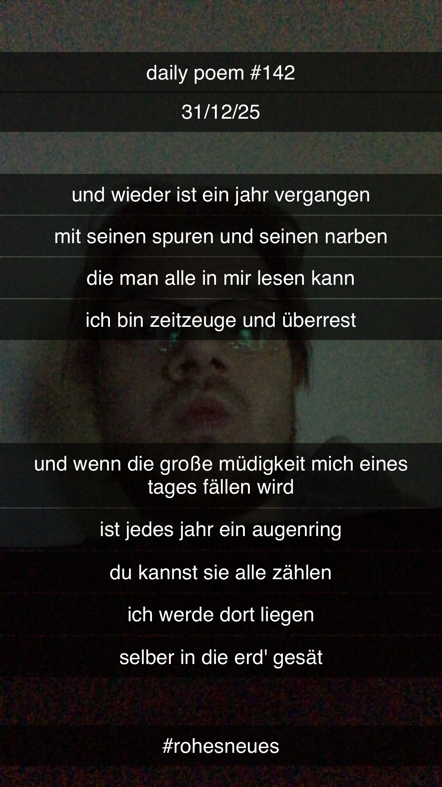

Und wieder ist ein Jahr vergangen
Und wieder ist ein Jahr vergangen
Mit seinen Spuren und seinen Narben
Die man alle in mir lesen kann
Ich bin Zeitzeuge und Überrest
Und wenn die große Müdigkeit mich eines Tages fällen wird
Ist jedes Jahr ein Augenring
Du kannst sie alle zählen –
Ich werde dort liegen
Selber in die Erd' gesät
